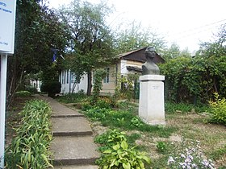
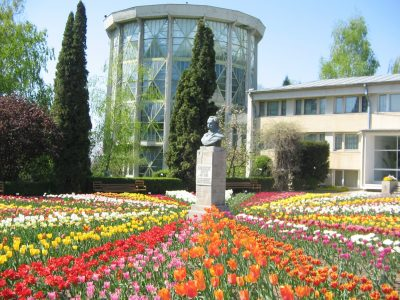

Palatul Culturii - palat al muzeelor, recunoscut ca efigie a orașului Iași, a fost construit în stil neogotic și a reprezentat una din ultimele expresii ale romantismului în arhitectura oficială.
Deși nu este construit peste temelii antice, după cum se presupunea la începutul secolului al XX-lea, Palatul se înalță, în parte, peste ruinele curtilor domnești medievale, menționate documentar în 1434.
Au fost folosite, parțial, și temeliile vechiului palat (neoclasic) din vremea voievodului Alexandru Moruzi (1806-1812), refăcut de Mihail Sturza (1841-1843) si demantelat în 1904.
De la aceasta construcție a moștenit Palatul legenda celor 365 camere, corespunzătoare zilelor anului.
Edificiul, ridicat intre 1906-1925, este creația cea mai însemnată a arhitectului roman I.D. Berindei, format la școala pariziană.
Din punct de vedere decorativ, în holul central se remarcă un mozaic figurativ în care sunt dispuse concentric diverse reprezentări de bestiarum gotic: acvila bicefală, dragonul, grifonul, leul.
Deasupra holului se găsește un luminator în care, inițial, a fost amenajată o seră.
În ciuda aspectului arhaicizant, la construirea Palatului, blocurile de piatră au fost înlocuite cu materiale ușoare și mai putin costisitoare.
În plus, la decorarea unor săli, s-a folosit în premieră un material brevetat de Henri Coandă, denumit bois-ciment, care imită lemnul de stejar.
Remarcabile sunt și elementele de feronerie decorativă, care se pot admira, de exemplu, la ușile de la Sala Voievozilor.
Clădirea a fost, de asemenea, dotată cu facilități ultramoderne pentru epoca respectivă, cum ar fi iluminatul electric, încălzirea (sistem pneumatic), ventilația, termostatele, aspiratoarele, care porneau toate de la subsol, unde se afla centrala mașinilor.
De asemenea, ținând cont de cele 14 incendii care au afectat clădirile anterioare Palatului, Berindei a ignifungat lemnăria podului cu un produs intitulat orniton, pentru acoperiș utilizând un material special, denumit eternita.
Clădirea inaugurată pe 11 octombrie 1925 a servit drept Palat Administrativ și de Justiție până în 1955, când a fost destinat găzduirii unora din cele mai de seamă instituții culturale ale orașului Iași, reunite astăzi sub denumirea de Complexul Național Muzeal „Moldova” Iași.
Muzeul Otilia Cazimir

Muzeul „Otilia Cazimir” fost inaugurat la 10 iunie 1972.
Otilia Cazimir (1894-1967), pe numele ei adevărat Alexandrina Gavrilescu, a devenit ieșeancă în 1898, în urma mutării familiei de la Cotu Vameș (jud. Neamț), la Iași. Casa modestă din apropierea bisericii Zlataust a fost cumpărată de Gheorghe Gavrilescu, tatăl poetei, în anul 1908, și a devenit locul în care Otilia Cazimir a trăit și a creat până la sfârșitul vieții.
Scriitoarea, în cele aproape șase decenii cât a locuit aici, a scris și publicat volume de poezii (Lumini şi umbre, Fluturi de noapte, Cântec de comoară, Licurici etc.), proză (Din întuneric. Fapte şi întâmplări adevărate, Grădina cu amintiri), un vodevil (Unchiul din America), numeroase articole publicate în revistele sau ziarele vremii, proză memorialistică (Prietenii mei scriitori…), literatură pentru copii (Jucării, A murit Luchi, Baba Iarna intră-n sat, Albumul cu poze). Traducerile din literatura rusă și din cea franceză completează profilul său scriitoricesc.
Cele două camere ale muzeului păstrează vie amintirea Otiliei Cazimir. Fotografiile, manuscrisele, volumele cu dedicație, biroul și biblioteca, se alătură lucrărilor de artă plastică semnate de Victor Mihăilescu-Craiu, Nicolai Constantin, Dan Covătaru. Icoanele de la bunicul dinspre tată (Gavriil Casian, preot la Roman), umbreluța de soare japoneză realizată din bambus și mătase, o rochie și un șal purtate de poetă în ultima perioadă a vieții, un goblen lucrat de mama Otiliei, cu dedicație „pentru Luchi”, pălăriile de soare întregesc portretul scriitoarei.
Gradina Botanica

Scurt Istoric
Existenţa Grădinii Botanice din Iaşi are o istorie zbuciumată care a parcurs o perioadă de peste un secol până să ajungă aşa cum o vedem şi o admirăm noi astăzi.
Alături de alte priorităţi culturale emanate din vechea capitală a Moldovei un loc deosebit îl ocupă şi înfiinţarea la Iaşi, în anul 1856, a primei Grădini Botanice din România, de către medicul şi naturalistul Anastasie Fatu, mare patriot, filantrop şi om de cultură. Amplasată pe un teren cumpărat din fonduri proprii în apropiere de Râpa Galbenă, avea să fie pentru mulţi ani, până la moartea marelui carturar, un important centru cultural pentru tineretul studios din Iaşi care avea posibilitatea de a studia botanica pe material viu, dar şi un mijloc de instrucţie şi educaţie pentru toţi iubitorii naturii.
Iată ce a scris chiar Anastasie Fătu în 1870 în prefaţă la lucrarea „Enumeraţiunea specieloru cultivate în Grădina Botanică din Iaşi” privind înfiinţarea şi scopurile acestei grădini: „Încă din 1856 am pus fundamentele unei Grădini Botanice în oraşul Iaşi. Această instituţie, care la început a propăşit foarte încet, fiind redusă la propriile mele mijloace, mai târziu a prosperat mai bine, subvenţionată fiind de Casa Statului şi a Comunei Iaşilor…”.
„Fondând această grădină mi-am propus a îmbunătăţi salubritatea oraşului Iaşi, a îndemna pe „giunimea” studioasă la învăţarea botanicei şi a procura iubitorilor de ştiinţe naturale ocaziunea de a contempla frumuseţile naturii în momentele lor de repaus”. Prin eforturile financiare proprii susţinute cu intermintenta de autorităţile publice, grădina lui A. Fatu a durat până la moartea sa (1886), după care terenul a fost vândut de urmaşii acestuia şi tot materialul botanic adunat cu migala de o viaţă, s-a risipit.
Despre prima Grădina Botanică din România şi intemeietorul ei A. Fătu, ne mai aminteşte astăzi denumirea a două străduţe din vecinătatea fostei grădini: Str. Florilor şi Str. A. Fătu, aflate în apropriere de Râpa Galbenă.
Stimulată de interesul manifestat faţă de grădina lui A. Fătu, Societatea de Medici şi Naturalişti din Iaşi, înfiinţează, în 1873 o a doua Grădină Botanică în jurul sediului acestei societăţi, actualmente Muzeul de Istorie Naturală. Sarcina organizării acestei noi grădini este încredinţată Dr. Dimitrie Brandza, iar fondurile necesare au fost furnizate de societate. În cea mai mare parte, plantele acestei Grădini au fost oferite de către A. Fătu din grădina sa sub formă de plante vii şi seminţe, aşa cum reiese din cererea acestuia din 11 ianuarie 1873. Parte din plantele sădite de D. Brandza (doi stejari, doi plopi şi un castan porcesc) mai dăinuiesc şi astăzi în părculeţul din curtea Muzeului de Istorie Naturală.
În 1870, conducerea Universităţii din Iaşi ia în discuţie problema înfiinţării unei grădini botanice proprie pe terenul din spatele vechii clădiri a Universităţii, unde în prezent se găsesc clădirile Institutului de Medicină şi Farmacie. După această hotărâre s-au făcut unele plantări, dar abia în 1876 s-au alocat fonduri de la buget care au permis o dezvoltare mai amplă a grădinii. Se pare că atât fondurile alocate cât şi spaţiul din preajma Universităţii nu au fost suficiente pentru a satisface cerinţele tineretului de la Universitate, având o existenţă simbolică.
În 1900 la insistenţele repetate (încă din 1895) ale Prof. Al. Popovici, Universitatea cere să-i fie cedat terenul din spatele actualului Palat al Culturii pentru înfiinţarea unei noi grădini botanice. Demersurile repetate pentru obţinerea fondurilor necesare înfiinţării acestei grădini au rămas fără un răspuns concret. Cu toate că s-a întocmit un proiect de amenajare foarte amănunţit, el nu s-a putut finaliza niciodată din lipsa de fonduri şi mai târziu ca urmare a consecinţelor primului război mondial. De acest proiect ne mai aminteşte astăzi doar strada Botanică din vecinatatea ştrandului.
Pentru a satisface cerinţele învăţământului biologic,în 1921, Prof. Al. Popovici înfiinţează o nouă grădină botanică pe terenul din spatele noii clădiri a Universităţii cu suprafaţa de cca. 1 hectar, pe care se construieşte un mic complex de sere pentru plantele tropicale.
Această grădină a servit învăţământului botanic ieşean timp de peste 40 ani, pînă în 1963-1964 când a fost mutată pe actualul amplasament din Dealul Copoului. Din această ultimă gradină botanică se mai păstrează şi astăzi arborii şi arbuştii din parcul aflat între vechea clădire a Universităţii, Cantina studenţească şi căminele studenţeşti de pe Bd. Copou şi o mică seră „turn” în care se cultivau palmieri şi bananieri.
În 1960, cu ocazia sărbătoririi centenarului Universităţii s-a prezentat situaţia Grădinii Botanice şi s-a ajuns la concluzia că nu mai corespunde cerinţelor învăţământului, şi în 1963 s-a ales ca teren de amplasare a unei noi grădini botanice în Dealul Copoului pe Str. Dumbrava Roşie. S-a elaborat un studiu tehnico-economic şi în următorii ani a început preluarea terenurilor, organizarea reţelei de drumuri şi alei, plantaţiile, construcţia şi popularea serelor, la început cu materialele provenite din vechea grădină botanică.
Suprafeţelor de teren preluate iniţial li s-au adăugat treptat altele, ajungând astăzi la aproape 100 de hectare.
Din anul 2000, Grădina Botanică din Iaşi este membru fondator al Asociaţiei Grădinilor Botanice din România.